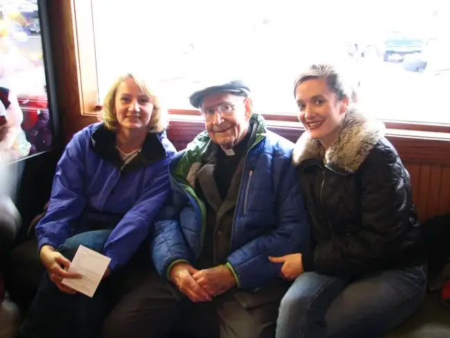

As I prepare to talk to a social-justice group in Canada next week, I have been pondering how my pro-life advocacy work and social justice merge.

Because we are wont to separate ourselves out, so often, it seems, there are the social-justice-minded folks, and the pro-life-minded folks, and never the two shall meet.
But this boxing in of the two has never sat well with me, and it seems ever important for me to ponder how we limit ourselves and one another. And as I’ve reflected recently on some of the people who have most impressed me, most influenced me, on my faith journey, I’ve found that their approach to social justice and life issues are all-encompassing. For them, there is no one group of this and another of that. It’s everything and all in one pot, flowing all from a heart connected to the living God.
I’m thinking now of Mother Teresa, who was the ultimate in working toward social justice through picking the maggots off street people and doing what she could to feed the whole of India. This is social justice. And yet, she also once said, “It is a poverty to decide that a child must die so that you may live as you wish,” and, “If a mother can kill her own child, what is left but for us to kill each other.”
In the soul of Mother Teresa, there was no two sides about it. Social justice and pro-life work went hand in hand.
The same could be said of Dorothy Day, who was famous for her passion for social justice and the issues of homelessness and hunger. Though not quick to sign statements of any kind, in 1974, Day signed a document against abortion issued by the Catholic Peace Fellowship, which, among other things, stated: “A primary obligation of civil society is to protect the innocent. A legal situation such as now exists in the United States, making abortion available upon demand, is an abdication of the state’s responsibility to protect the most basic of rights, the right to life.” Day was post-abortive, and understood the injustice of abortion quite well.

And there is someone even closer to me, my friend Fr. Bill Mehrkens, who died last month, just shy of his 93rd birthday. Father Bill founded the Dorothy Day House for the homeless shelter here in Moorhead, Minn., not long before I began encountering him as a college freshman. I found depth and truth in his homilies focused on “the little people,” the forgotten and hungry of this world. And yet even as he was out making a menace of himself by advocating for those who had been neglected on our streets, never did he go soft on the topic of abortion. To him, this, too, was a grave injustice. The unborn child was “anawim” too, after all.
I’ve been thinking of that recently because a lot of people who were influenced by Fr. Bill have been involved in social-justice circles in an active way, and I have found myself wondering how it is that I have gone in this other direction, focusing so much energy primarily on the unborn and those who encircle them.
This has become such an important issue to me that I have spent many Wednesdays downtown Fargo at our state’s only-abortion facility, praying for the young women, the workers and the babies who will lose their lives each week here. I have wondered, would my mentor approve of this work?
And that’s when I recalled a side pursuit that Fr. Bill took up during my college years. He, too, would protest through prayer downtown. Not at the abortion facility, but at another business nearby — an adult book store. Like me, he would head downtown regularly to pray for those who were involved in something immoral — in this case, sexual addiction and the injustices that arise from it. He wasn’t there to judge, no more than I go to the sidewalk for that reason, but to be a light in the darkness and remind people that the moral life brings light and freedom, and a life lacking it, darkness and imprisonment.
It was in recalling this “ministry” of his that I realized anew that when it comes to authentic social-justice work, there are no dividing lines between what “issue” is most worthy of our time. It is vitally important that people are fed and have shelter and other basic necessities and receive medical care when needed; just as it is important we recognize the tragedy of sexual addiction, and the ever-growing scourges of pornography and how it tears families and individuals at their core apart; and it is important that individuals who are brought forth into this creation have a chance to live emerge from their mother’s wombs intact and not be ripped apart limb by limb first, simply because we have lost our regard for the most innocent among us.
My drive to be on the sidewalk each week that I can, even when it is inconvenient and I’d rather be just about anywhere else, is not at odds with the likes of people such as Father Bill, who has so influenced me. Though the bulk of his social-justice efforts may have taken place in a realm somewhat different from where my focus has been, it all comes from a similar heart. It all comes from a deep sense that injustices are happening in our world, and someone has got to sound the alarm, no matter how messy or uncomfortable it might get, or how much we may get heckled.
This week, I’m working on an article involving a local mother who has done amazing work in our community helping to eradicate hunger and homelessness. I stand in awe of what she and her three children have accomplished. As we worked out the best time to connect about the article, I had to be delayed because of my work on the sidewalk, and I realized that we are each doing something vital as we reach out and touch people who need hope.
We each have an area of social justice that calls to us, and each is deserving of time and energy as the Body of Christ. Because I am a mother, and have a deep caring for other mothers and what their burdens are, the pro-life movement has been the cause that has most drawn me. That doesn’t mean I’m not as social-justice minded as the person ladling soup at the shelter. It just means this is the sphere that God has called me to, based on where He needed me and my particular gifts the most.
At some point, we have to make a decision. Where can we make the most difference? We are limited, and have only a number of hours in our days, and only a finite number of days in our lives. There is no need for competition, no need to pit one issue against the other. We are each part of the Body of Christ, doing what we can within our own constraints, to shine light where and while we are able.
Through my pondering, I’ve concluded that short of being the antithesis of social-justice work, being a pro-life advocate is social-justice work on steroids. Without a serious regard for life at its most innocent, there is little hope we can carry out our work beyond the womb with true sincerity and consistency.
Jesus made it clear that it is through the hearts of children that we will come to truly know and see him. But we cannot know and see him through these little ones if we diminish them from the get-go.
Thankfully, I recognize it and have been given an ability and passion to articulate that reality. And I will do so, from here on out, not with the thought that my contribution is somehow less worthy than another, but seeing that all who truly follow Christ have a love for justice planted deep within their souls. And it is from that well our work to diminish injustice at every turn springs and thrives.
Q4U: What is your main social-justice sphere? How do you make good on this desire to bring justice to the world?